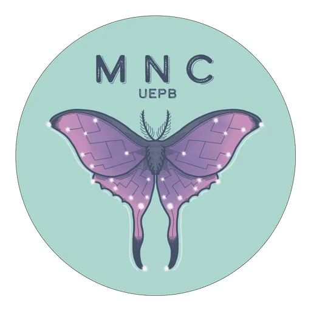

<!-- Ícones compartilhados: use <svg><use href="#icone-..."/></svg> em qualquer página. -->
<svg class="icon-sprite" aria-hidden="true" focusable="false">
  <symbol id="icone-instagram" viewBox="0 0 24 24" fill="none" stroke="currentColor" stroke-width="1.8"><rect x="3" y="3" width="18" height="18" rx="5"/><circle cx="12" cy="12" r="4"/><circle cx="17.5" cy="6.5" r="1" fill="currentColor" stroke="none"/></symbol>
  <symbol id="icone-linkedin" viewBox="0 0 24 24" fill="none" stroke="currentColor" stroke-width="1.8" stroke-linecap="round" stroke-linejoin="round"><rect x="3" y="3" width="18" height="18" rx="3"/><path d="M7.5 10v7M11 17v-7m0 3a3 3 0 0 1 6 0v4"/><circle cx="7.5" cy="7" r="1" fill="currentColor" stroke="none"/></symbol>
  <symbol id="icone-github" viewBox="0 0 24 24" fill="none" stroke="currentColor" stroke-width="1.8" stroke-linecap="round" stroke-linejoin="round"><path d="M9 19c-4 1-4-2-6-2m12 5v-4a3.5 3.5 0 0 0-1-2.7c3.3-.4 6.8-1.6 6.8-7A5.4 5.4 0 0 0 19.3 4a5 5 0 0 0-.1-4S18 0 15.2 1.5a13.4 13.4 0 0 0-7 0C5.4 0 4.2 0 4.2 0A5 5 0 0 0 4.1 4a5.4 5.4 0 0 0-1.5 3.8c0 5.4 3.5 6.6 6.8 7A3.5 3.5 0 0 0 8.5 18v4" transform="translate(1 2) scale(.9)"/></symbol>
</svg>

<a href="#conteudo" class="skip-link">Pular para o conteúdo</a>
<a href="./index.html" class="logo">
  <div class="logo-icon"></div>
  <span class="logo-text">Mulheres na Computação <span class="mnc-abbrev">MNC</span></span>
</a>

<nav class="main-nav" id="main-nav" aria-label="Navegação principal">
  <ul>
    <li><a href="./index.html"    id="nav-index">Página Inicial</a></li>
    <li><a href="./paginas/programa.html" id="nav-programa">Programa</a></li>
    <li><a href="./paginas/equipe.html" id="nav-equipe">Equipe</a></li>
    <li><a href="./paginas/galeria.html" id="nav-galeria">Galeria</a></li>
    <li><a href="./paginas/publicacoes.html"  id="nav-publicacoes">Publicações</a></li>
    <li><a href="./paginas/parcerias.html" id="nav-parcerias">Parcerias</a></li>
    <li><a href="./paginas/quero-participar.html" id="nav-quero-participar">Como participar</a></li>
  </ul>
</nav>

<div class="nav-end">
  <button class="theme-toggle" id="themeToggle" type="button" aria-label="Alternar tema">
    <span class="icon-dark" aria-hidden="true">☾</span><span class="icon-light" aria-hidden="true">☀</span>
  </button>
  <button class="menu-toggle" id="menuToggle" type="button" aria-controls="main-nav" aria-expanded="false" aria-label="Abrir menu">
    <span aria-hidden="true"></span>
    <span aria-hidden="true"></span>
    <span aria-hidden="true"></span>
  </button>
</div>
